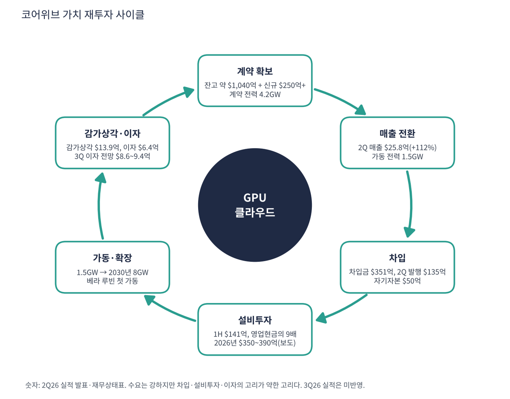

코어위브는 원래 암호화폐 채굴 회사로 시작해 2019년 이후 GPU를 AI 기업에 빌려주는 사업으로 전환한 'GPU 클라우드' 회사다. 엔비디아가 투자했고 최신 GPU를 가장 먼저 대량으로 받는 곳 중 하나다. 2025년 3월 나스닥에 상장했고 2026년 나스닥-100에 편입됐다. 마이크로소프트·오픈AI·메타 같은 대형 고객과 수년짜리 계약을 맺고 그 계약을 담보로 돈을 빌려 데이터센터를 짓는 구조다.
| 항목 | 내용 |
|---|---|
| 종목 | CoreWeave, Inc. (CRWV) · NASDAQ · AI 클라우드 · 2017년 설립 · 본사 뉴저지주 리빙스턴 |
| 시가총액 | 약 $256억 · 순손실이라 PER 없음 · P/S 3.4배 (11/6 종가 $46.40) |
| 최근 발표 분기(2Q26) | 매출 $25.8억(+112%), 조정 EBITDA $15.1억(마진 59%), 영업손실 -$0.5억, 순손실 -$6.3억 |
| 계약 잔고 | 약 $1,040억(6월 말) + 7월 초 신규 약정 $250억 이상(잔고 미반영). 계약 전력 3.7GW → 4.2GW(8월), 가동 전력 1.5GW |
| 재무 구조(6월 말) | 현금 $55.2억, 차입금 $351억, 리스 부채 약 $163억, 자기자본 $50억 |
| 주요 고객 | 마이크로소프트(2024년 매출의 약 62%), 오픈AI(누적 계약 약 $224억), 메타(약 $142억 계약), 2026년에는 제인 스트리트·데이터브릭스·캐터필러 등 기업 고객 확대 (2025년 공시·보도 기준) |
| 다음 실적 | 3Q26 실적: 미국 시간 11/10 장 마감 후(오후 5시 ET 컨퍼런스콜). 이 보고서에는 반영하지 못했다 |
| 직책 | 인물 | 역할·특징 |
|---|---|---|
| 공동 창업자·회장 겸 CEO | 마이클 인트레이터 | 채굴업에서 GPU 클라우드로 전환을 이끈 창업자. 2분기에 "규모가 운영 레버리지로 바뀌기 시작하는 변곡점에 도달했다"고 말함 |
경영 스타일: '계약을 먼저 확보하고, 그 계약으로 돈을 빌려 짓는다'. 한 분기에 가동 전력을 약 500MW 늘렸고, 2분기에만 부채 $135억을 발행했다. 제인 스트리트 $10억 지분 투자, 무담보 채권·전환사채 $100억 이상, HPC 인프라 담보 최초의 공모 신디케이트 대출 $31억 등 조달 경로를 계속 넓힌다. 회사는 가이던스를 보도자료가 아닌 컨퍼런스콜에서만 제시한다. 2분기 이후 보도된 전망은 2026년 설비투자 $350~390억(2분기에 범위 상단 초과 후 상향), 3분기 이자비용 $8.6~9.4억(2분기 $6.4억), 2026년 말 연환산 매출 $185~195억이며, 이 수치는 컨퍼런스콜 원문이 아니라 보도 인용이라 3분기 콜에서 재확인이 필요하다.
범용 클라우드와 달리 처음부터 GPU 학습·추론용으로 설계했다. 엔비디아 베라 루빈 NVL72를 업계 최초로 가동 검증했고, 학습 작업 관리(SUNK)·스토리지·에이전트 도구(ARIA·샌드박스)를 얹어 GPU 임대의 '상품화'를 막는다.
2030년 8GW 이상의 전력을 확보해 AI 연산을 수도·전기처럼 공급하는 것이 목표다. 구글 클라우드와 전용 회선으로 연결하는 등 멀티 클라우드로 하이퍼스케일러를 보완한다. 유틸리티처럼 자본이 먼저 들어가는 사업이라 자본 조달 비용이 성패를 가른다.
| 분기 | 매출 | 조정 EBITDA | 영업이익 | 이자비용 | 순손익 | 설비투자 | 특이 사항 |
|---|---|---|---|---|---|---|---|
| 2024.3Q | $5.8억 | $3.8억 | $1.2억 | $1.0억 | -$3.6억 | $12.2억 | 상장 전 |
| 2024.4Q | $7.5억 | $4.9억 | $1.1억 | $1.5억 | -$0.5억 | $35.0억 | |
| 2025.1Q | $9.8억 | $6.1억 | -$0.3억 | $2.6억 | -$3.2억 | $14.1억 | 3월 상장 |
| 2025.2Q | $12.1억 | $7.5억 | $0.2억 | $2.7억 | -$2.9억 | $24.5억 | |
| 2025.3Q | $13.6억 | $8.4억 | $0.5억 | $3.1억 | -$1.1억 | $32.8억 | 잔고 $550억+ |
| 2025.4Q | $15.7억 | $9.0억 | -$0.9억 | $3.9억 | -$4.5억 | $40.6억 | 잔고 $668억 |
| 2026.1Q | $20.8억 | $11.6억 | -$1.4억 | $5.4억 | -$7.4억 | $77.0억 | 잔고 약 $1,000억 |
| 2026.2Q | $25.8억 | $15.1억 | -$0.5억 | $6.4억 | -$6.3억 | $64.2억 | 잔고 약 $1,040억 |


흐름 요약: 매출은 폭발적으로 늘지만 이익은 따라오지 않는다. 2년 동안 매출이 4.4배가 됐는데 영업이익은 $1.2억 흑자에서 $0.5억 적자로 바뀌었다. 이유는 감가상각비(분기 $5.6억 → $13.9억, 2.5배)와 이자비용($1.0억 → $6.4억, 6배)이다. GPU 서버는 5~6년에 걸쳐 비용 처리되는데 새로 산 서버가 매출을 내기 전에 비용이 먼저 잡힌다. 사업 자체의 현금 마진은 좋다. 조정 EBITDA 마진이 56~65%다. 문제는 그 아래다. EBITDA에서 감가상각과 이자를 빼면 순이익률이 -24%다. 현금흐름은 빚이 메운다. 2분기 영업현금 $6.8억에 설비투자 $64.2억, 차이 $57억을 부채로 조달했다. 1분기 영업현금 $29.8억에는 고객 선수금이 크게 들어왔고, 재무상태표의 이연 매출은 $97억이다.
| 재무상태표 (2026.6.30) | 금액 | 의미 |
|---|---|---|
| 현금·현금성자산 | $55.2억 | 연초 $31.3억에서 증가(부채 조달) |
| 유형자산(GPU·데이터센터) | $467억 | 연초 $306억에서 6개월 만에 +53% |
| 차입금(소구 + 비소구) | $351억 | 소구 $314억 + 비소구 $37억 |
| 리스 부채 | 약 $163억 | 데이터센터 임차 |
| 자기자본 | $50억 | 차입금 대비 약 7배 |
| 구성 | 돈을 버는 방식 |
|---|---|
| 장기 약정 계약 | 고객이 GPU 용량을 2~5년간 쓰기로 약정하고 매달 요금을 낸다. 매출의 대부분이며 계약 잔고(약 $1,040억)의 원천. 일부는 선금으로 받는다 |
| 주문형(On-demand) | 약정 없이 쓰는 만큼 내는 사용료. 비중은 작다. 3분기 중 약 3~6개월짜리 단기 계약을 메가와트당 연 약 $4,000만 가격으로 맺었다고 회사가 발표(보도자료) |
| 소프트웨어·서비스 | SUNK(학습 작업 관리), 관측·스토리지, ARIA·샌드박스 등 에이전트 AI 도구. GPU 임대에 얹어 파는 구조 |

코어위브의 매출은 전력(MW)에 비례한다. 데이터센터 전력이 곧 GPU를 꽂을 수 있는 용량이다. 가동 전력은 1년 사이 약 590MW(3Q25)에서 1.5GW(2Q26)로 2.5배가 됐고 계약 전력은 3.7GW(6월 말)에서 4.2GW(8월 11일)로 늘었다. 계약 전력이 모두 가동되면 매출이 지금의 2배 이상이 될 수 있다. 반대로 데이터센터 완공이 늦어지면 매출 인식이 미뤄진다. 2025년 11월 주가 급락이 그런 사례였다. 주요 고객 집중이 높아 소수 고객이 잔고 대부분을 차지한다.
인트레이터 CEO의 2분기 메시지는 "AI가 모든 산업의 기반이 되고, 그 잠재력을 실현하려면 목적에 맞게 설계된 플랫폼이 필요하다"는 것이다. 코어위브가 가려는 곳은 GPU 임대업자에서 'AI 시대의 전력·연산 유틸리티'다.
| 축 | 내용 |
|---|---|
| AI 전용 클라우드 | 범용 클라우드와 달리 처음부터 GPU 학습·추론용으로 설계. 토큰당 비용과 성능 기록을 내세움 |
| 엔비디아 최신 GPU 선점 | 베라 루빈 NVL72 업계 최초 가동 검증. 새 GPU를 가장 빨리 고객에게 공급하는 것이 경쟁력 |
| 멀티 클라우드 | 구글 클라우드와 전용 회선 연결, 다른 클라우드에서도 SUNK·데이터 가속 사용. 하이퍼스케일러와 경쟁하면서 보완 |
| 고객 다변화 | AI 연구소(오픈AI) → 하이퍼스케일러(마이크로소프트) → 일반 기업(캐터필러·헤지펀드) |


위: 트레이딩뷰 주봉 데이터로 재구성(10·20·40주선). 아래: 트레이딩뷰 공개 차트 일봉 캡처(작도 숨김, 이동평균선·볼린저밴드만 표시).
| 이동평균 | 값 | 종가 대비 | 해석 |
|---|---|---|---|
| 5일선 | $48.47 | -4.3% | 신저가 후 첫 반등(+6.3%) |
| 20일선 | $59.33 | -21.8% | 10월 갭 하락 구간 |
| 50일선 | $75.56 | -38.6% | 9~10월 박스($80~90) 아래 |
| 100일선 | $82.03 | -43.4% | |
| 200일선 | $90.17 | -48.5% | 주가의 거의 2배 |
배열은 200일 > 100일 > 50일 > 20일 > 5일 > 주가로 완전한 역배열이다. 2025년 9~10월 대형 계약 발표로 $89 → $153, 11월 실적(데이터센터 지연) 후 $65, 2026년 4~5월 잔고 약 $1,000억 발표로 $75 → $138(5/6 고점), 7월 $60.5, 8월 2분기 실적 후 $70 → $117, 9월 $80~90, 10월 둘째 주부터 4주 만에 $82 → $40.6(-51%), 11/5 신저가 후 $46.4에 마감했다.
| 규칙 | 기준 | 현재 값 | 신호 |
|---|---|---|---|
| 장기 추세 필터 | 종가 vs 200일선 | $46.40 < $90.17 | 매도 |
| 중장기 교차 | 50일선 vs 200일선 | $75.56 < $90.17 | 매도 |
| 단기 교차 | 20일선 vs 50일선 | $59.33 < $75.56 | 매도 |
| 돈키언 채널 | 55일 고가 $104.59 / 저가 $40.58 | 중간값 $72.59 아래 | 매도 |
| 1개월 모멘텀 | 21거래일 수익률 | -43.1% (기준 $81.58) | 매도 |
| 3개월 모멘텀 | 63거래일 수익률 | -47.4% (기준 $88.19) | 매도 |
| 6개월 모멘텀 | 126거래일 수익률 | -59.4% (기준 $114.15) | 매도 |
| 12개월 모멘텀 | 252거래일 수익률 | -59.4% (기준 $114.42) | 매도 |
| 종합 (8개 평균) | -1.00 | 강한 매도 |
해석: 8개 신호가 모두 매도(-1.00)이고 낙폭도 오라클보다 크다. 14일 ATR $5.67 (12.2%)은 주가의 12.2%로, 실적 발표 하루에 ±20~30%가 나와도 이상하지 않다. 2025년 11월과 2026년 8월 실적 주에는 각각 -26%, +16%였다. 3분기 실적(미국 시간 11/10 장 마감 후)이 단기 방향을 정하는 이벤트이고 이 보고서는 그 결과를 반영하지 않았다.
| 가격 | 무엇이 바뀌나 | 의미 |
|---|---|---|
| $54 ~ 55 | 10월 말 박스 상단 | 단기 반등 1차 저항 |
| $59 ~ 61 | 20일선, 10월 갭 | 단기 추세 회복 확인 |
| $72.6 | 돈키언 중간값 | 채널 신호 매수 전환 |
| $40.6 이탈 | 신저가 갱신 | 지지선 없는 구간 |
| 구분 | 가격대 | 근거 |
|---|---|---|
| 저항 2 | $59 ~ 65 | 20일선, 10월 둘째 주 갭 |
| 저항 1 | $51 ~ 55 | 10월 말 박스 |
| 지지 1 | $40 ~ 43 | 11/5 신저가, 11/5~6 종가대 |
| 지지 2 | $35 전후 | 공모가($40) 아래 심리적 구간 |
사업은 커지고 있지만 주식은 '신용 위험 자산'처럼 움직인다. 실적 발표 전 신규 진입은 동전 던지기에 가깝다. 발표 후 $51 이상 종가 유지, 3분기 잔고 $1,200억 이상, 2027년 자금 조달이 주식 희석 없이 제시되는 조건을 확인한 뒤 $48~52에서 계획 비중의 30%(변동성이 커서 다른 종목의 절반 이하 비중)를 진입한다. 손절은 $38 종가 이탈이다. 목표는 1차 $55(10월 말 박스), 2차 $61(20일선·갭)이다. $40.6을 이탈하면(공모가 아래 신저가) 매수를 금지하고 지지선이 없는 구간이라 관망한다.
| 악재 요인 | 내용 | 강도 |
|---|---|---|
| 부채·이자 | 차입금 약 $351억, 분기 이자 $6.4억이 조정 영업이익($1.3억)의 5배, 3분기 전망 $8.6~9.4억. 금리·신용 시장에 민감 | 높음 |
| 고객 집중 | 소수 대형 고객(마이크로소프트·오픈AI·메타)이 잔고 대부분. 한 곳의 계약 조정이 치명적 | 높음 |
| 실행·지연 | 데이터센터 완공·전력 확보 지연 시 매출 인식 지연(2025년 11월 사례) | 중간~높음 |
| GPU 감가상각 | 엔비디아 신제품 주기가 1년으로 짧아지면 구형 GPU 임대 단가·잔존가치 하락 | 중간 |
| 경쟁 | AWS·애저·구글·오라클, 네비우스 등 다른 GPU 클라우드. 고객이 자체 데이터센터를 지을 가능성 | 중간 |
| 티커 | 회사 | 시가총액 | PER(TTM) | PEG | P/S | EPS 성장(YoY) |
|---|---|---|---|---|---|---|
| CRWV | 코어위브 | $26B | 적자 | – | 3.19배 | – |
| NBIS | 네비우스 | $35B | 적자 | – | 24.52배 | – |
| ORCL | 오라클 | $351B | 18.2배 | 0.37 | 4.70배 | +48% |
| NVDA | 엔비디아 | $4,498B | 23.6배 | 0.20 | 15.63배 | +125% |
| MSFT | 마이크로소프트 | $3,940B | 27.7배 | 0.74 | 11.09배 | +36% |
| AMZN | 아마존 | $2,804B | 21.0배 | 0.27 | 3.45배 | +75% |
| GOOGL | 알파벳 | $3,476B | 14.9배 | 0.17 | 7.39배 | +89% |
코어위브·네비우스는 순손실이라 PER·PEG가 없다. 표의 코어위브 P/S 3.2배는 트레이딩뷰 값이며 본문의 3.4배는 시총 ÷ 최근 4분기 매출로 직접 계산한 값이다.
비교 결론: 순손실이라 PER 비교는 불가능하다. P/S 3.2배는 네비우스(24.5배)의 8분의 1이지만 오라클(4.7배)·아마존(3.4배)보다 낮아 보이는 이유는 이익이 아니라 차입 부담 때문이다. 같은 'AI 인프라'라도 하이퍼스케일러는 번 돈으로 짓고 코어위브는 빌려서 짓는다는 차이가 가격에 반영돼 있다.
코어위브는 순손실 기업이라 런웨이가 의미 있다. 현금으로 설비투자와 이자를 감당하지 못하는 만큼, '외부 자금 없이 버티는 기간'을 숫자로 점검했다.
| 지표 | 값 | 계산·출처 | 해석 |
|---|---|---|---|
| 현금·현금성자산 | $55.2억 | 2026.6.30 (트레이딩뷰 최근 분기는 $64.1억) | 연초 $31.3억에서 증가 |
| 영업현금흐름 (2Q26) | $6.8억 | 회사 발표 | 설비투자의 10% 수준 |
| 설비투자 (2Q26) | $64.2억 | 회사 발표 (1H26 합계 $141억) | 영업현금의 9배 |
| 분기 FCF (2Q26) | -$57.4억 | $6.8억 - $64.2억 | 한 분기에 현금 $55.2억 전액 소진 가능한 속도 |
| TTM FCF | -$136.6억 | 트레이딩뷰 | 최근 4분기 |
| 이자비용 (2Q26 → 3Q26 전망) | $6.4억 → $8.6~9.4억 | 3Q 전망은 보도 인용 | 연 약 $36억 수준으로 증가 |
| 가정 | 연 FCF | 현금 $55.2억 소진 | 의미 |
|---|---|---|---|
| 2분기 속도 유지 | -$230억 (-$57.4억 × 4) | 약 0.96분기 (약 3개월) | 한 분기도 못 버틴다는 뜻 |
| TTM 속도 | -$136.6억 | 약 0.4년 (약 5개월) | 트레이딩뷰 기준 |
| 2026년 설비투자 $370억(보도 범위 중간값, 가정) 하반기 반영 | 하반기 설비투자 $229억 - 영업현금 $20억 (가정) | 필요 외부 자금 약 $154억 | 현금 $55억을 쓰고도 약 $154억이 더 필요 |
2026년 설비투자 범위와 하반기 영업현금 $20억은 보도 인용과 내 가정이며 회사가 확인한 수치가 아니다. 런웨이는 '외부 자금 없이'라는 가정이며, 실제로는 대출·채권·전환사채·선수금으로 메우고 있다.
| 기준 | 매출 | P/S | 비고 |
|---|---|---|---|
| 트레이딩뷰 표시값(11/6 환산) | – | 3.2배 | 산출 기준 차이 |
| 최근 4분기(TTM) | $75.9억 | 3.4배 | 시총 $256억 ÷ $75.9억 |
| 2Q26 연율화 | $103.2억 | 2.5배 | $25.8억 × 4 |
| 2026년 말 연환산 목표 (보도) | $185~195억 | 1.3~1.4배 | 달성 시. 2분기 대비 약 1.8배 필요 |
| 동종·대형 클라우드 | – | – | 네비우스 24.5, 오라클 4.7, 아마존 3.4, 마이크로소프트 11.1 |
해석: P/S 3.4배는 AI 인프라 중 가장 낮은 축이다. 다만 매출 1달러가 아직 순손실이고 차입금이 시가총액보다 크다(시총 $256억 vs 차입금 $351억). 시장은 매출 배수가 아니라 부채와 이자를 가격에 반영하고 있다. 매출 배수만 보고 싸다고 판단하면 안 된다.
| 지표 | 값 | 판정 |
|---|---|---|
| EBITDA (트레이딩뷰, TTM) | $37.6억 | 흑자 |
| 조정 EBITDA (회사 정의, 최근 4분기 합계) | $44.1억 ($8.4 + 9.0 + 11.6 + 15.1) | 마진 58% |
| TTM 영업이익률 | -3.0% | 트레이딩뷰. 영업 단계에서 이미 적자 |
| EV/EBITDA | 약 18.8배 | (시총 $256억 + 총부채 $516억 - 현금 $64억) ÷ $37.6억 |
| EBITDA 대비 이자 (2Q26) | 조정 EBITDA $15.1억 ÷ 이자 $6.4억 = 2.4배 | 3Q 이자 전망($8.6~9.4억) 반영 시 약 1.7배 |
| 단계 | 금액 | 설명 |
|---|---|---|
| 조정 EBITDA | $15.1억 | 사업의 현금 마진 59% |
| - 감가상각 등 | -$13.9억 | 새 GPU 서버가 매출을 내기 전에 비용 처리 |
| = 조정 영업이익 | $1.3억 | 마진 5% |
| - 이자비용 | -$6.4억 | 조정 영업이익의 5배 |
| = 순손실(기타 포함) | -$6.3억 | 순이익률 -24% |
| 방식 | PER | EPS 성장률 | PEG | 판정 |
|---|---|---|---|---|
| 트레이딩뷰 (TTM) | 없음 (순손실) | -47% (손실 확대) | 산출 불가 | 산출 불가 |
| 선행 (2026년 흑자 전환 가정) | – | – | 산출 불가 | 산출 불가 |
판정: PEG는 산출 불가(순손실)이며 '투자 적격' 기준(1.0 이하)을 판정할 수 없다. 대신 손익분기 조건을 계산했다. 감가상각 연 약 $56억(2분기 $13.9억 × 4)과 이자 연 약 $36억(3분기 전망 중간값 $9.0억 × 4)을 합치면 EBITDA가 연 $92억은 돼야 영업 단계에서 손실이 끝난다(내 계산, 감가상각·이자가 현재 수준 유지라는 가정). TTM 조정 EBITDA $44.1억의 약 2.1배다. 설비투자가 계속 늘기 때문에 감가상각·이자도 늘어 실제 필요 EBITDA는 이보다 높다.

코어위브 사이클의 엔진은 대형 고객의 장기 계약(잔고)이다. 계약이 선수금과 매출 근거가 되고, 그 계약을 담보로 빚을 내 GPU와 데이터센터를 사며, 가동된 용량이 다시 매출이 된다. 이 고리는 매출을 빠르게 키우지만 빚과 이자, 감가상각이 매출만큼 빠르게 자라 이익이 남지 않는다.
| 고리 | 현재 숫자 | 고리 강도 | 약해지는 신호 |
|---|---|---|---|
| ① 계약 확보 | 잔고 약 $1,040억 + 신규 $250억 이상, 계약 전력 4.2GW | 강함 | 잔고 증가 둔화, 대형 고객 계약 조정 |
| ② 매출 전환 | 2Q 매출 $25.8억(+112%), 가동 1.5GW | 강함 | 데이터센터 완공·전력 지연(2025년 11월 사례) |
| ③ 차입 | 차입금 $351억, 2Q 발행 $135억, 리스 $163억, 자기자본 $50억 | 과속 | 금리 상승, 신용 스프레드 확대 |
| ④ 설비투자 | 1H $141억, 2026년 $350~390억(보도), 영업현금의 약 9배 | 과속 | 자금 조달이 설비투자를 못 따라감 |
| ⑤ 가동·확장 | 1.5GW → 2030년 8GW 목표, 베라 루빈 첫 가동 | 진행 중 | 신제품 주기 단축으로 구형 GPU 단가 하락 |
| ⑥ 감가상각·이자 | 감가상각 $13.9억(2.5배), 이자 $6.4억 → 3Q 전망 $8.6~9.4억 | 부담 | 이자가 조정 EBITDA의 절반을 넘음 |
이 사이클의 구조: 오라클과 같은 구조지만 자체 현금 창출이 사실상 없고 자기자본이 얇다. 수요는 강한데(①②) 돈의 고리(③④⑥)가 사이클의 속도를 정한다. 강한 고리는 ①·②이고 약한 고리는 ③·④·⑥이다. 이 종목에서는 매출 성장률보다 조달 금리와 조달 방식(부채 vs 주식)이 다음 주가를 정한다.